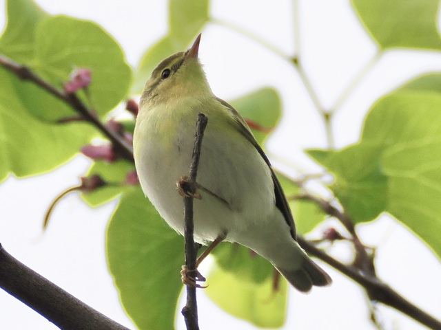

Wood Warbler
Phylloscopus sibilatrix
Order: Passeriformes
Family: Phylloscopidae

A rather yellow leaf warbler.
Order: Passeriformes
Family: Phylloscopidae

A rather yellow leaf warbler.
Some say that their song is like a coin spinning. I, however, have not had the luxury to witness it in person.